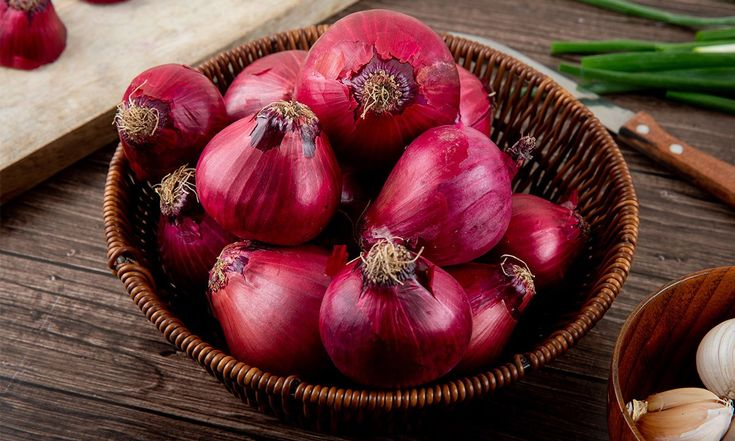

Bawang Merah

Deskripsi
Bawang merah adalah bahan dasar yang umum digunakan dalam berbagai masakan di seluruh dunia. Memiliki ukuran kecil hingga sedang, bawang merah berwarna merah keunguan atau merah muda dengan lapisan kulit yang tipis dan mengkilap. Ketika diiris atau dihancurkan, bawang merah mengeluarkan aroma khas yang tajam dan menggoda, serta rasa yang manis sedikit pedas dan gurih.Sebagai bahan masakan, bawang merah berfungsi sebagai bahan dasar untuk menumis, bumbu penyedap, dan pelengkap dalam berbagai hidangan. Ia dapat digunakan dalam bentuk irisan, cincangan halus, atau sebagai bumbu halus untuk menambah aroma dan rasa pada sup, sambal, gulai, dan berbagai hidangan lainnya. Selain memberikan rasa yang khas, bawang merah juga memiliki manfaat kesehatan karena kandungan antioksidan dan senyawa anti-inflamasi yang dapat membantu meningkatkan sistem imun dan kesehatan secara umum. Penggunaan bawang merah yang tepat dapat memberikan kedalaman rasa dan aroma yang membuat hidangan semakin lezat dan menggugah selera.
Tips&Trik:
- Perhatikan Kulitnya: Pilih bawang putih yang kulitnya kering, rapat, dan tidak berjamur atau lembab. Kulit yang bersih dan tidak berjamur menunjukkan bawang putih dalam kondisi segar dan berkualitas baik.
- Ukuran dan Bentuknya: Bawang putih yang baik biasanya memiliki ukuran yang seragam dan bentuk bulat atau oval yang padat. Hindari bawang putih yang terlalu kecil, pecah, atau memiliki bagian yang berwarna berbeda.
- Kebersihan dan Kondisi Fisik: Pastikan tidak ada bercak hitam, bercak lembab, atau tanda-tanda kerusakan pada bawang putih. Bawang yang segar akan terlihat kokoh dan tidak lembek.
- Aroma: Bawang putih segar akan mengeluarkan aroma khas yang tajam dan segar saat dibawa dekat hidung. Jika aromanya tidak keluar atau terasa kurang segar, sebaiknya tidak dipilih.
- Tidak Ada Tunas atau Tunas yang Masih Kecil: Hindari bawang putih yang sudah mulai tumbuh tunas hijau karena menunjukkan usia yang sudah cukup lama dan kualitasnya menurun.
- Pilih yang Berat dan Padat: Bawang putih yang berkualitas baik biasanya terasa berat dan padat jika dipegang, menunjukkan bahwa isinya cukup banyak dan tidak kering.